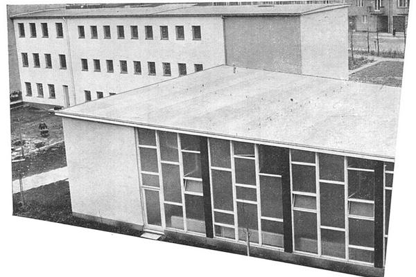

Über uns
Seit 1962 ein Haus für Kinder und Jugendliche in Moabit.
Ein offener Ort für den ganzen Kiez
Der Bredowtreff ist eine Jugendfreizeiteinrichtung des Bezirksamts Mitte von Berlin im Wolfgang-Scheunemann-Haus. Kinder von 8 bis 14 und Jugendliche von 15 bis 27 Jahren können hier ihre Freizeit verbringen.
Offen für alle
Einfach vorbeikommen: Die offenen Angebote sind kostenlos, ohne Mitgliedschaft und ohne Anmeldung.
Selbstvertrauen stärken
Wir wollen, dass junge Menschen ihre Stärken entdecken und lernen, was sie für ihren eigenen Weg brauchen.
Ausprobieren erwünscht
Sport, Kochen, Fotografie, Turniere, Ausflüge und Feste – bei uns kann man vieles zum ersten Mal machen.
Ein Haus mit Geschichte
Das Haus in der Bredowstraße wurde nach sieben Jahren Planung und Bau als „Wolfgang-Scheunemann-Heim“ eröffnet. Es war von Anfang an als Treffpunkt für junge Menschen gedacht.
Der große Saal war das Zentrum der Jugendkulturarbeit im Bezirk: Konzerte – auch mit international bekannten Musikern wie Albert Mangelsdorff – und Großveranstaltungen wie „100 Jahre Moabit“ machten das Haus bekannt.
Seitdem hat sich das Haus immer wieder an den Kiez angepasst. Heute ist der Saal eine Sporthalle mit Bühne – und noch immer das Herz des Hauses.

Gemeinsam für den Kiez
Träger
Bezirksamt Mitte von Berlin
Abteilung Jugend, Schule und Sport
Kooperationspartner
- Moabiter Grundschule
- Karl-Bolle-Grundschule
- Hedwig-Dohm-Oberschule
- FC Karame 78 e.V.
- Outreach